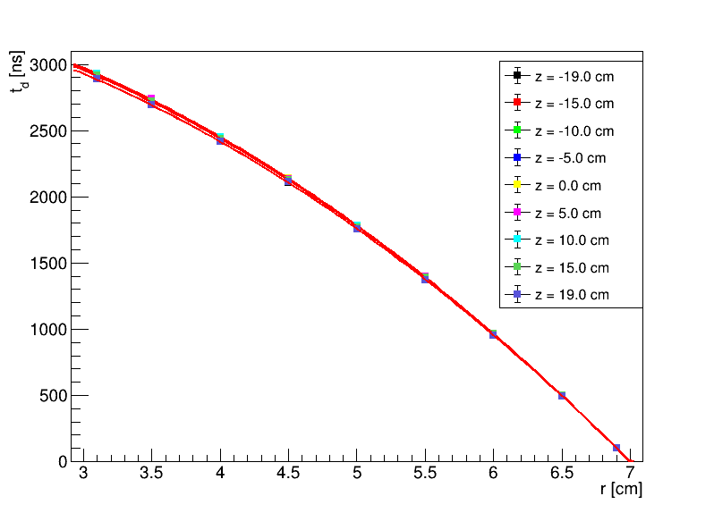
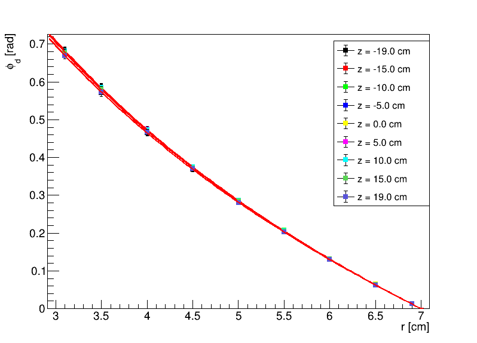
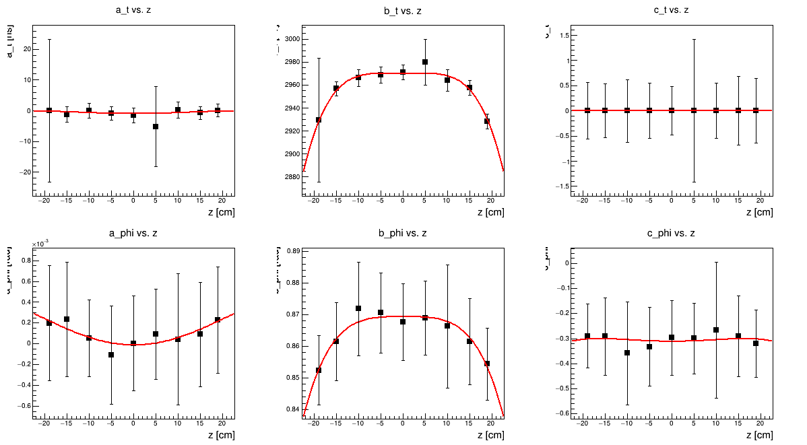

Run Group F Summer 2020 Cosmics Parameters
| Solenoid |
V_cathode |
V_GEMs |
V_transfer |
Run numbers |
| 3.5 T |
-4058V |
-400 |
-300 |
|
Pressure = 760 torr | Gas-Mixture = 80:20 He:CO2 | Temp = 293 K
Drift times vs r and Drift angles vs r


Parameter fits

The drift time fit equation has the form:
\begin{equation}
t_d(r,z) = a_t(z) + b_t(z) \left[ \frac{1}{2} + \frac{r_{\mathrm{min}}^2 - r_{\mathrm{max}}^2 + \sqrt{4(0.1+c^2_t(z))(r_{\mathrm{max}}^2 - r^2) + (r_{\mathrm{max}}^2 - r_{\mathrm{min}}^2 - 0.1 - c^2_t(z))^2}}{2(0.1+c^2_t(z))} \right] + t_{\mathrm{gap}}
\end{equation}
where $r_{\mathrm{min}} =$ 3.0 cm, $r_{\mathrm{max}}$ = 7.0 cm, and
\begin{equation}
a_t(z) = a_{t,0} + a_{t,1}z^2 + a_{t,2} z^4
\end{equation}
\begin{equation}
b_t(z) = b_{t,0} + b_{t,1}z^2 + b_{t,2} z^4
\end{equation}
\begin{equation}
c_t(z) = c_{t,0} + c_{t,1}z^2 + c_{t,2} z^4
\end{equation}
$t_{\mathrm{gap}}$ = 690.276 ns
$a_{t,0}$ = -0.982471
$a_{t,1}$ = 0.00339403
$a_{t,2}$ = -3.6483e-06
$b_{t,0}$ = 2969.62
$b_{t,1}$ = 0.0202767
$b_{t,2}$ = -0.00036562
$c_{t,0}$ = 9.78439e-06
$c_{t,1}$ = 2.39009e-08
$c_{t,2}$ = 4.97351e-11
The drift angle fit equation has the form:
\begin{equation}
\phi_d(r,z) = a_{\phi}(z) + b_{\phi}(z) \ln\left( \frac{r_{\mathrm{max}}}{r} \right) + c_{\phi}(z) \left( \frac{1}{r^2} - \frac{1}{r_{\mathrm{max}}^2} \right) + \phi_{\mathrm{gap}}
\end{equation}
where $r_{\mathrm{min}} =$ 3.0 cm, $r_{\mathrm{max}}$ = 7.0 cm, and
\begin{equation}
a_{\phi}(z) = a_{\phi,0} + a_{\phi,1}z^2 + a_{\phi,2} z^4
\end{equation}
\begin{equation}
b_{\phi}(z) = b_{\phi,0} + b_{\phi,1}z^2 + b_{\phi,2} z^4
\end{equation}
\begin{equation}
c_{\phi}(z) = c_{\phi,0} + c_{\phi,1}z^2 + c_{\phi,2} z^4
\end{equation}
$\phi_{\mathrm{gap}}$ = 0.104486 rad
$a_{\phi,0}$ = 0
$a_{\phi,1}$ = 0
$a_{\phi,2}$ = 0
$b_{\phi,0}$ = 0.86933
$b_{\phi,1}$ = -3.96734e-06
$b_{\phi,2}$ = -1.13733e-07
$c_{\phi,0}$ = -0.311102
$c_{\phi,1}$ = 8.09744e-05
$c_{\phi,2}$ = -1.53727e-07